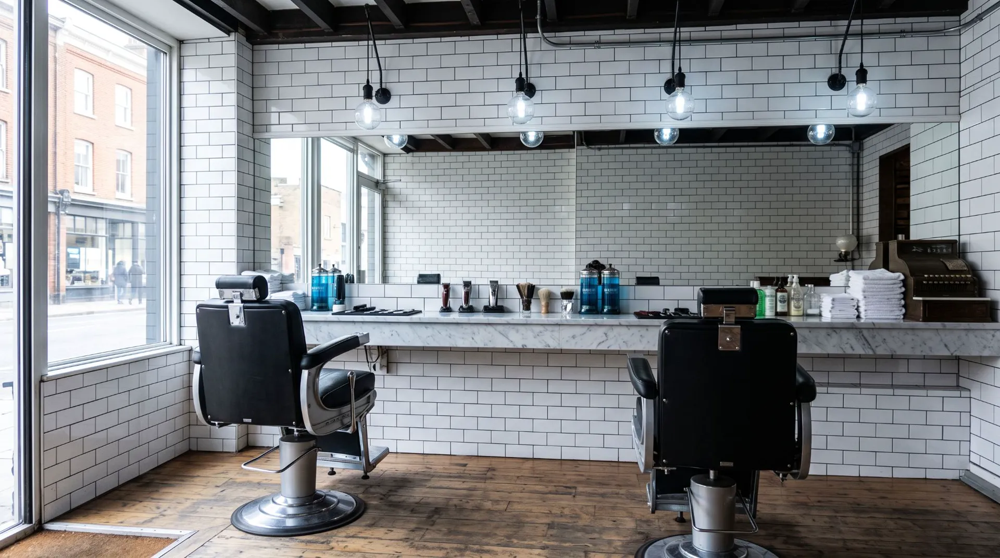
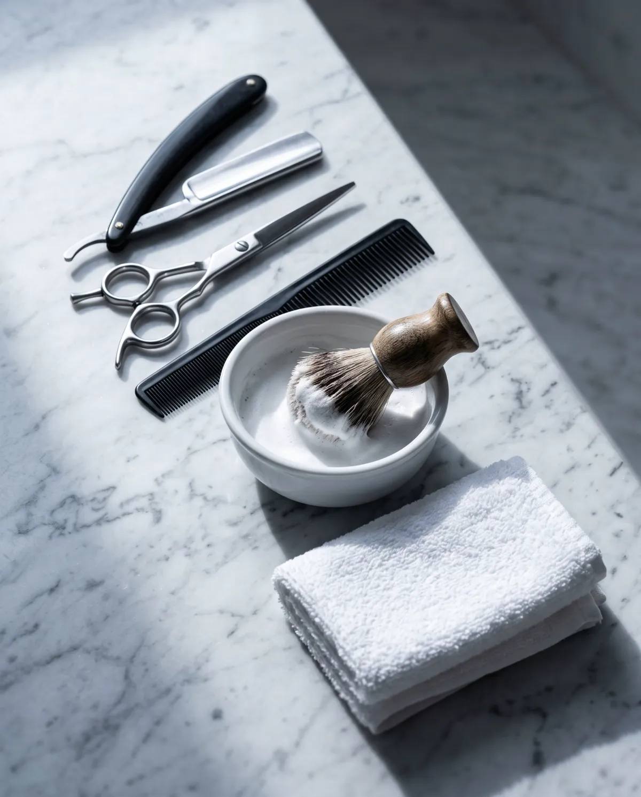

28 €
Coupe
Ciseaux ou tondeuse, shampoing et coiffage compris. Comptez 30 minutes.

Sans rendez-vous, du mardi au samedi, rue des Martyrs.
28 €
Ciseaux ou tondeuse, shampoing et coiffage compris. Comptez 30 minutes.
35 €
Serviette chaude, coupe-chou, baume d'après-rasage. Comptez 40 minutes.
18 €
Mise en forme au rasoir et aux ciseaux, contours nets.
42 €
Les deux dans la foulée. Comptez une heure.
20 €
Jusqu'à 12 ans. Le samedi matin, venez tôt.
Espèces et carte à partir de 10 €. Pas de réservation en ligne, on prend dans l'ordre d'arrivée.
Samir Lacroix a ouvert rue des Martyrs en 2014, après onze ans passés chez un barbier de la Goutte d'Or. Théo l'a rejoint en 2021. Ils travaillent tous les deux au rasoir, ce qui devient rare.

Le seul endroit du quartier où on ne me demande pas quatre fois ce que je veux.
Venez avant 11h le samedi, sinon c'est une heure d'attente. Ça vaut le coup quand même.
47 rue des Martyrs
75009 Paris
Métro Saint-Georges, ligne 12. Trois minutes à pied.
Appeler le salon